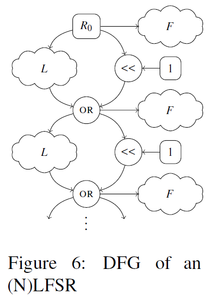
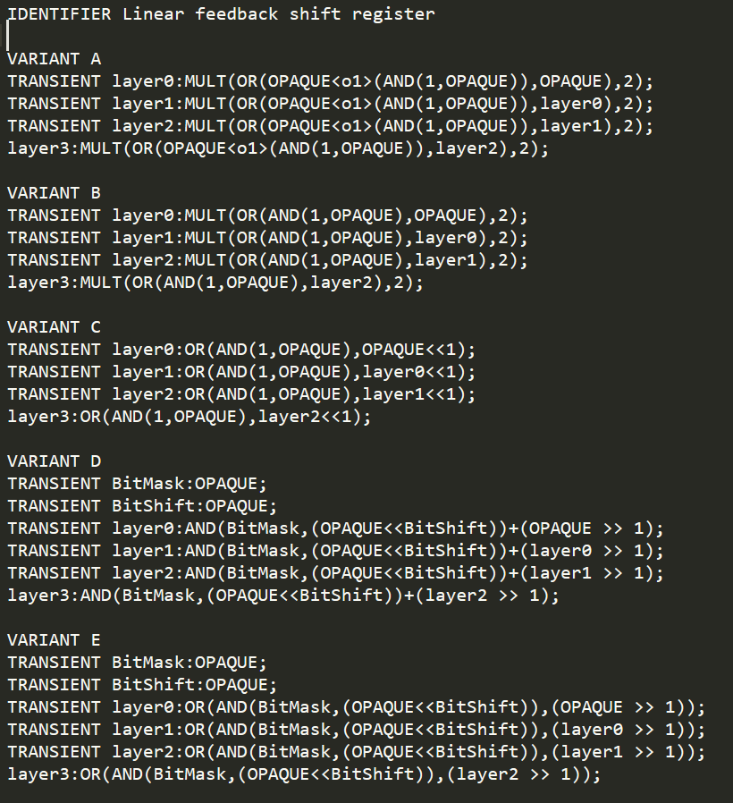
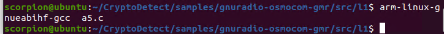
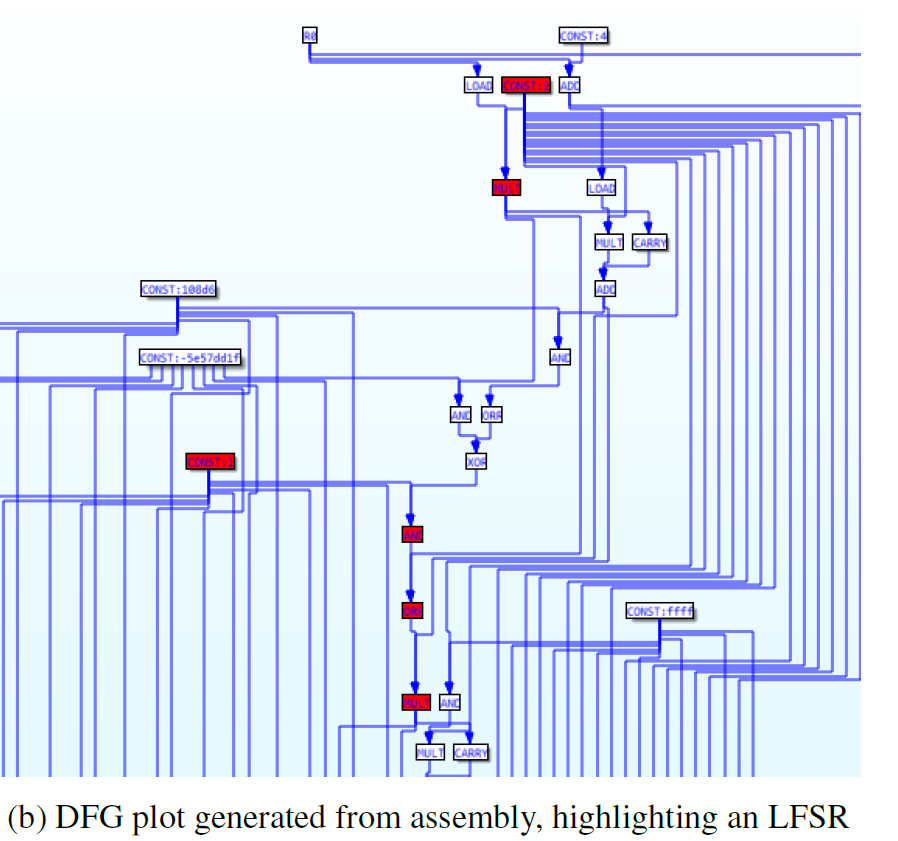

LFSR
lfsr
算法
假设R为一个（N）LFSR，对于每一轮，使用反馈函数L从R中的比特位（子集）生成一个新的比特位。如果L是线性的，例如异或，我们把R称为一个LFSR。反之，如果L是非线性的，R就是一个NLFSR。寄存器R中的所有位都向左移动一个位置，忽略最高位，新产生的位被放在最低位且被输出。
所以

signature

TRANSIENT用于表示从表达式生成的DFG节点不是很重要，图清除过程中可以简化。
OPAQUE
其中VARIANT C最常用。每轮迭代左移一位，通过反馈函数L生成一个新的比特位并放到
测试
用论文给出的a5算法样本进行：
https://github.com/marcelmaatkamp/gnuradio-osmocom-gmr/blob/master/src/l1/a5.c

但是无法识别
论文中给出和LFSR相关的图，但是不知道是什么样本

All articles in this blog are licensed under CC BY-NC-SA 4.0 unless stating additionally.